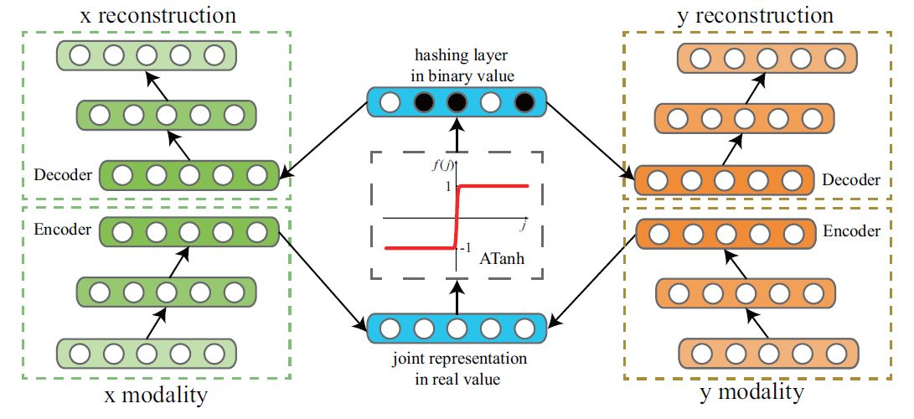
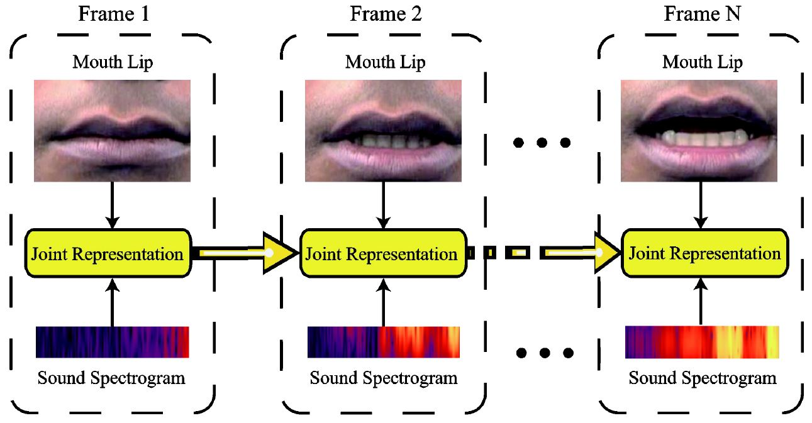

Publications
Conference Papers
 |
Discriminative Sounding Objects Localization via Self-supervised Audiovisual Matching |
 |
Cross-Task Transfer for Geotagged Audiovisual Aerial Scene Recognition |
 |
Multiple Sound Sources Localization from Coarse to Fine |
Listen to the Image |
Deep Multimodal Clustering for Unsupervised Audiovisual Learning |
Dense Multimodal Fusion for Hierarchically Joint Representation |
 |
Large Graph Hashing with Spectral Rotation |
|  | Deep Binary Reconstruction for Cross-modal Hashing |
 |
Image2song: Song Retrieval via Bridging Image Content and Lyric Words |
 |
Multimodal Learning via Exploring Deep Semantic Similarity |
|  | Temporal Multimodal Learning in Audiovisual Speech Recognition |
Journal Papers
 |
Deep Linear Discriminant Analysis Hashing |
|
|
Discrete Spectral Hashing for Efficient Similarity Retrieval |
Deep Binary Reconstruction for Cross-modal Hashing |
Workshop Papers
 |
Heterogeneous Scene Analysis via Self-supervised Audiovisual Learning |
Does Ambient Sound Help? - Audiovisual Crowd Counting |
 |
Co-Learn Sounding Object Visual Grounding and Visually Indicated Sound Separation in A Cycle |
|
|
A Two-Stage Framework for Multiple Sound-Source Localization |